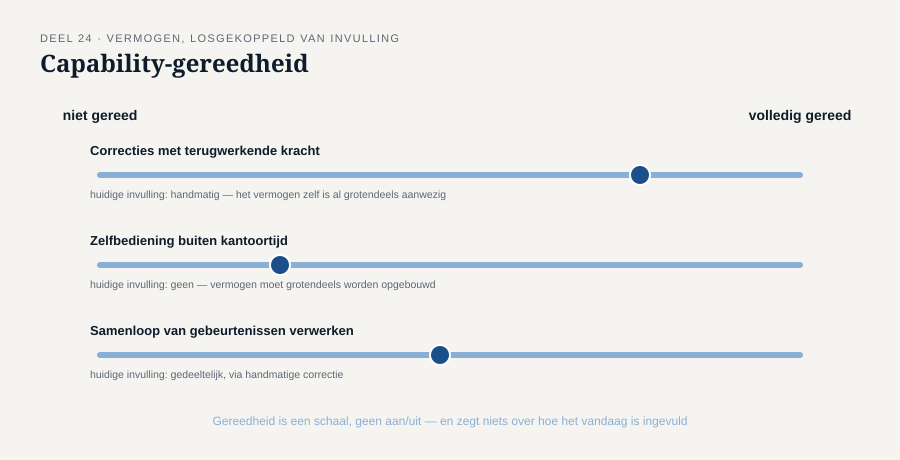
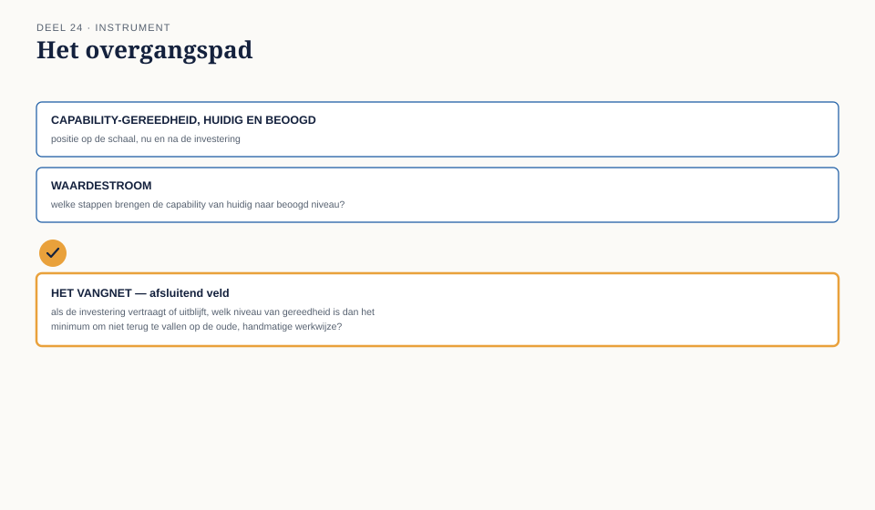

Deel 24 — Strategieanalyse II: veranderstrategie, capability's en het raakvlak met businessarchitectuur
Reader · Ductus-cursus Business-analyse · niveau 3 (expert) · deel 24 van 30
24.1 Waar dit deel over gaat
Deel 23 toetste één keuze op evenwichtigheid. De Stelselovergang bestaat uit tientallen zulke keuzes, die samen bepalen in welke volgorde en op welke manier zeven aangesloten fondsen overgaan naar het nieuwe stelsel. Die volgorde is zelf een strategische keuze — een veranderstrategie — en om haar goed te maken, moet je weten wat de organisatie daadwerkelijk kan, los van hoe zij het nu doet. Dat laatste is het domein van capability's, het begrip waar business-analyse en businessarchitectuur elkaar raken.
Aan het eind van dit deel kun je:
- het verschil benoemen tussen een capability en de manier waarop zij op dit moment wordt ingevuld;
- vaststellen of een organisatie gereed is voor een stap in de veranderstrategie, los van politieke of tijdsdruk om die stap te zetten;
- een waardestroom herkennen die door een verandering wordt geraakt, over organisatorische grenzen heen;
- met het overgangspad een verantwoorde volgorde voor een complexe transitie vaststellen.
24.2 De casus: wie gaat als eerste?
Uit het casusdossier: zeven aangesloten fondsen moeten overgaan naar het nieuwe stelsel; Nour el Idrissi's datakwaliteitsonderzoek laat grote verschillen tussen de fondsen zien.
Het bestuur moet beslissen in welke volgorde de zeven fondsen invaren. Victor Almeida's fonds meldt zich als eerste kandidaat.
"Onze sociale partners willen laten zien dat zij vooroplopen. Ze willen als eerste."
Merel: "Nour, hoe staat de datakwaliteit van dit fonds ervoor?"
"Niet slecht, maar ook niet het beste van de zeven. Er zitten nog een paar honderd dossiers met openstaande vragen, met name uit een periode vóór het Programma Mutatieplatform."
"En welk fonds staat er het beste voor?"
"Fonds vier — kleiner, minder historische mutaties, en al twee keer eerder grondig opgeschoond."
Victors wens is legitiem en begrijpelijk — dezelfde soort legitieme, maar niet per definitie doorslaggevende voorkeur als in deel 23. De vraag die dit deel beantwoordt, is niet of die wens er mag zijn, maar of zij de juiste basis is voor een volgorde die, eenmaal gezet, per fonds niet meer terug te draaien is na invaren.
24.3 Capability: wat je kunt, los van hoe
Een capability is het vermogen van een organisatie om iets te doen — bijvoorbeeld "de datakwaliteit van een deelnemersdossier vaststellen en, waar nodig, herstellen vóór invaren" — losgekoppeld van de specifieke mensen, processen of systemen die dat vermogen op dit moment invullen.
Dit onderscheid is belangrijk omdat een capability stabieler is dan haar invulling. Meridiaan had de capability om mutaties te verwerken al vóór het Programma Mutatieplatform uit niveau 2 — dat programma veranderde niet óf Meridiaan die capability had, maar hóe goed zij was ingevuld. Voor de Stelselovergang is de relevante vraag niet "hebben we een team dat dossiers kan nakijken", maar "hebben we het vermogen om, gegeven het volume en de deadline, alle relevante dossiers tijdig en betrouwbaar te controleren en te herstellen" — een vraag die verder gaat dan het bestaan van een team.
Capability-gereedheid is geen ja/nee
Een capability is zelden volledig aanwezig of volledig afwezig. Zij kent gradaties: aanwezig voor het huidige volume maar niet opschaalbaar; aanwezig in theorie maar nooit onder tijdsdruk getoetst; aanwezig bij één team maar niet overdraagbaar naar een ander. Bij de Stelselovergang is dit onderscheid cruciaal: de capability om datakwaliteit te herstellen bestaat bij Meridiaan, maar is nooit getoetst op het volume dat zeven fondsen tegelijk zouden vergen.

24.4 Waardestromen: waar capability's samenkomen
Een waardestroom is de keten van activiteiten die, van begin tot eind, waarde oplevert voor een specifieke belanghebbende — meestal dwars door organisatorische grenzen heen. Voor de Stelselovergang is de relevante waardestroom bijvoorbeeld: "van deelnemersdossier tot correct ingevaren individuele aanspraak" — een keten die loopt van Nour's datakwaliteitswerk, via Bram's technische invaarproces, tot de uiteindelijke, geverifieerde aanspraak van een individuele deelnemer.
Een veranderstrategie die per team of per systeem wordt gepland, zonder de waardestroom als geheel te bekijken, loopt het risico dat elke schakel apart "gereed" wordt verklaard terwijl de keten als geheel dat niet is — een grootschalige herhaling van precies het traceerbaarheidsprobleem uit niveau 2, deel 16, nu op het niveau van de hele organisatie.
↗ Voor de volle uitwerking van capability's, waardestromen en businessarchitectuur: de EA-cursus, die dit onderwerp als een van haar zwaartepuntdelen behandelt. Dit deel behandelt het vanuit het perspectief van de business analist: capability-gereedheid gebruiken om een veranderstrategie te onderbouwen, niet om een volledige architectuur te ontwerpen.
24.5 Een veranderstrategie op capability-gereedheid, niet op voorkeur
Terug naar de casus: Victors fonds wíl als eerste. Fonds vier staat er, volgens Nour, beter voor. Dit is dezelfde spanning als in deel 23 — een legitieme voorkeur van een belanghebbende versus een bredere, feitelijk onderbouwde behoefte — nu toegepast op volgorde in plaats van op een inhoudelijke keuze.
Drie overwegingen die een verantwoorde volgorde onderbouwen, in plaats van politieke of emotionele voorkeur:
Capability-gereedheid per fonds. Welk fonds heeft de minste openstaande datakwaliteitsvragen, en is dat verschil groot genoeg om zwaarder te wegen dan de voorkeur van een fonds zelf?
Leereffect. Een eerste, kleinere transitie kan lessen opleveren die de latere, grotere transities verbeteren — een argument om juist niet met het grootste of meest complexe fonds te beginnen, ongeacht wie het liefst als eerste gaat.
Onomkeerbaarheid. Invaren is, zoals het casusdossier vaststelt, in de kern niet terug te draaien. Een fonds met de minste zekerheid over zijn datakwaliteit draagt het grootste risico als het als eerste gaat — dit risico weegt zwaarder naarmate de gevolgen van een fout minder herstelbaar zijn.
24.6 De werkvorm: het overgangspad
Het instrument van dit deel is het overgangspad: een sjabloon dat de volgorde van een complexe, gefaseerde transitie onderbouwt op capability-gereedheid en waardestroom-samenhang, in plaats van op voorkeur of tijdsdruk.
Het blad
De stap (bijvoorbeeld: het invaren van een specifiek fonds). Benodigde capability's, met een gereedheidsinschatting per capability (aanwezig / deels / niet getoetst onder volume / afwezig). Geraakte waardestroom(en), met de zwakste schakel expliciet benoemd. Geuite voorkeur van de belanghebbende, apart genoteerd — niet genegeerd, wel gescheiden van de feitelijke gereedheid. Voorgestelde positie in de volgorde, met onderbouwing.
Het veld dat het verschil maakt
Welke capability-aanname ligt onder deze volgorde, en wat is het vangnet als die aanname niet uitkomt?
Dit veld herhaalt, in een nieuwe vorm, het principe van niveau 2, deel 13 (welke aanname over de huidige situatie is nooit geverifieerd) — nu toegepast op een capability-aanname die, als zij onjuist blijkt, gevolgen heeft voor een stap die niet meer is terug te draaien. Voor de casus: de aanname dat Victors fonds' "paar honderd openstaande dossiers" tijdig genoeg kunnen worden opgeschoond om alsnog vroeg te kunnen invaren. Het vangnet moet vooraf vaststaan — bijvoorbeeld een vooraf afgesproken moment waarop, als het aantal openstaande dossiers niet voldoende is gedaald, het fonds automatisch verschuift naar een latere positie, zonder dat dit als politiek gevoelig incident hoeft te worden behandeld.

Toegepast op de casus
| Veld | Inhoud |
|---|---|
| Stap | Invaren fonds Victor Almeida |
| Benodigde capability's | Datakwaliteitsherstel (deels — nooit getoetst op dit volume); invaarrekencapaciteit (aanwezig) |
| Geraakte waardestroom | Van deelnemersdossier tot ingevaren aanspraak — zwakste schakel: de honderden nog openstaande dossiers |
| Geuite voorkeur | Sterk: wil als eerste, om reputatiereden |
| Voorgestelde positie | Niet als eerste; positie te heroverwegen na afronding van de opschoning, met fonds vier als eerste kandidaat |
| Vangnet | Vooraf afgesproken drempel voor openstaande dossiers; bij niet-halen automatische verschuiving naar een latere positie, vooraf gecommuniceerd aan Victor zodat dit geen verrassing is |
24.7 Terug naar de casus
Victors wens om als eerste te gaan is, net als in deel 23, geen fout — het is een legitieme voorkeur die een plek verdient in de analyse, zonder dat zij de analyse bepaalt. Het overgangspad maakt het mogelijk die voorkeur serieus te nemen én er tegelijk een feitelijk onderbouwde volgorde tegenover te zetten, met een vooraf afgesproken vangnet voor het moment dat de onderliggende capability-aanname niet uitkomt.
Vooruit naar deel 25. Met een onderbouwde veranderstrategie op programmaniveau is de volgende stap het daadwerkelijk ontwerpen van de requirementsarchitectuur die deze transitie over alle deelprojecten heen moet dragen — het zwaartepunt van het CBAP-examen. Deel 25 gaat over requirementsarchitectuur op programmaschaal.